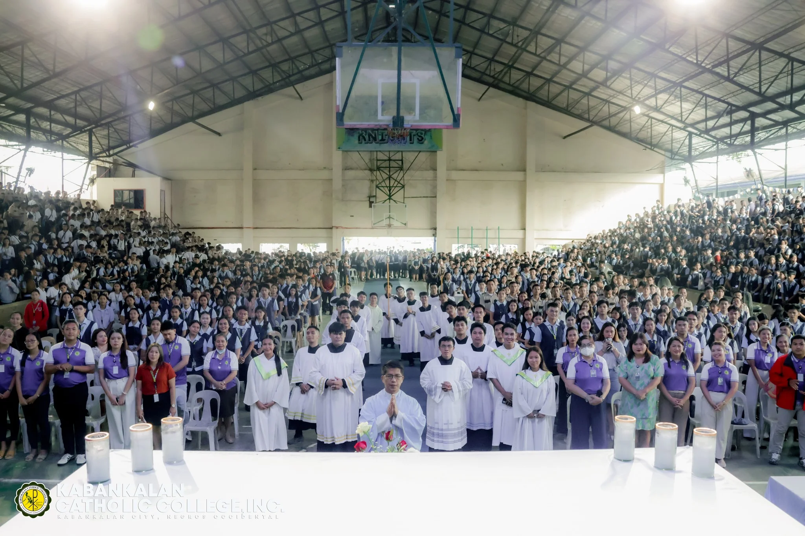
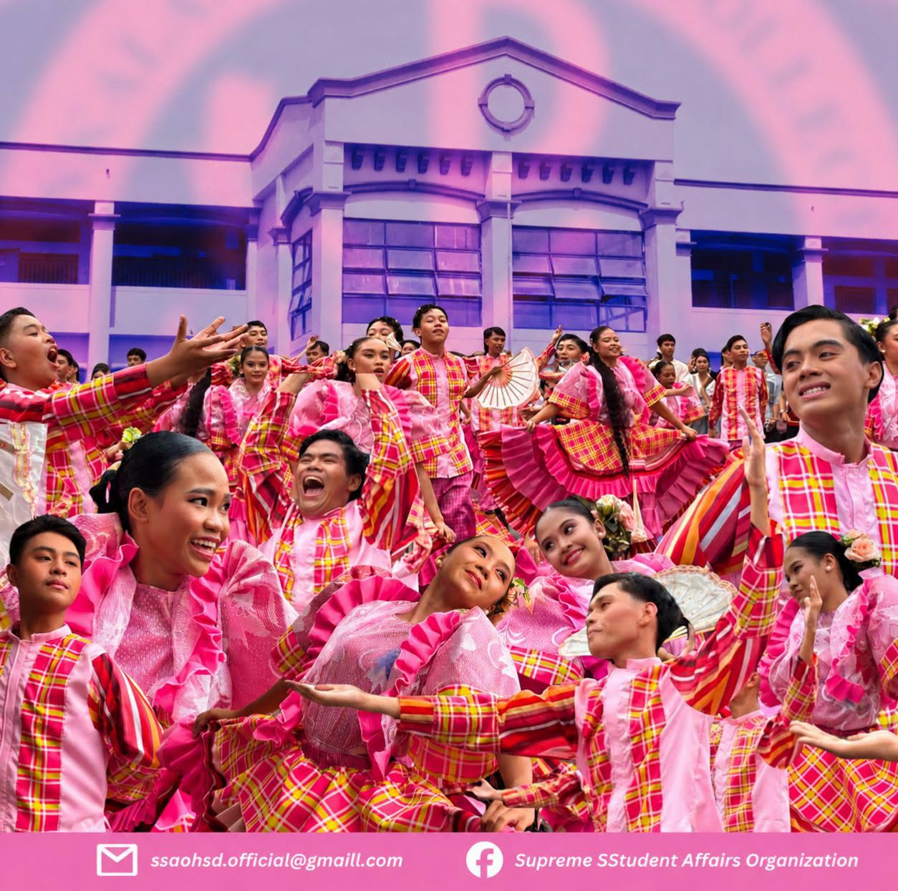

Events
Stay informed with the latest announcements, events, and happenings at Kabankalan Catholic College.

College Department Holds Intramurals and College Week
September 2026
The KCC College Department held its annual College Week, bringing together students from all programs for a week of friendly competition, academic contests, and cultural showcases. Events included basketball, volleyball, and table tennis tournaments, as well as quiz bees, debate competitions, essay writing contests, and talent shows. Each program fielded teams and representatives, fostering camaraderie and school spirit. The College Week culminated in an awarding ceremony recognizing outstanding performances in both athletic and academic competitions.

KCC Celebrates 99th Foundation Day
December 2026
Kabankalan Catholic College, Inc. celebrated its 99th Foundation Day with a week-long series of activities, including a thanksgiving mass, academic competitions, cultural presentations, sports events, and community outreach. Founded in 1927, KCC has grown from a small secondary school called Kabankalan Institute to a full-fledged educational institution offering programs from elementary to college. The Foundation Day celebrations highlight KCC's rich history and its continuing commitment to the mission of "Teaching Ye All Nations." The celebration also featured an alumni homecoming, where former KCCians reconnected with their alma mater and shared their success stories.